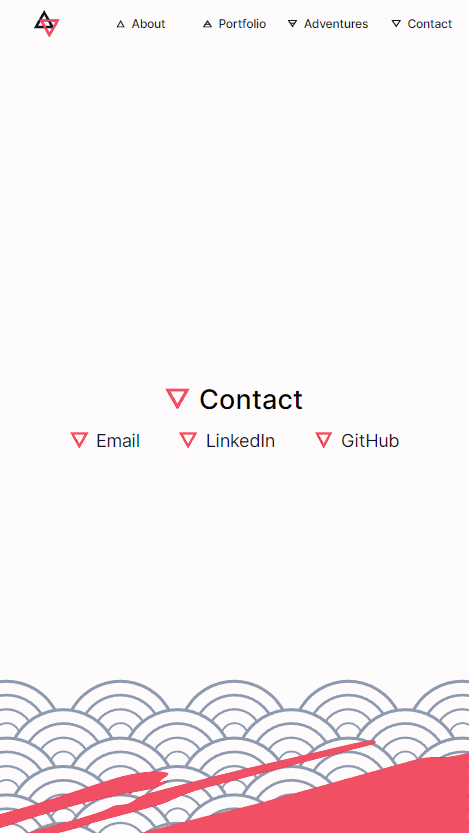
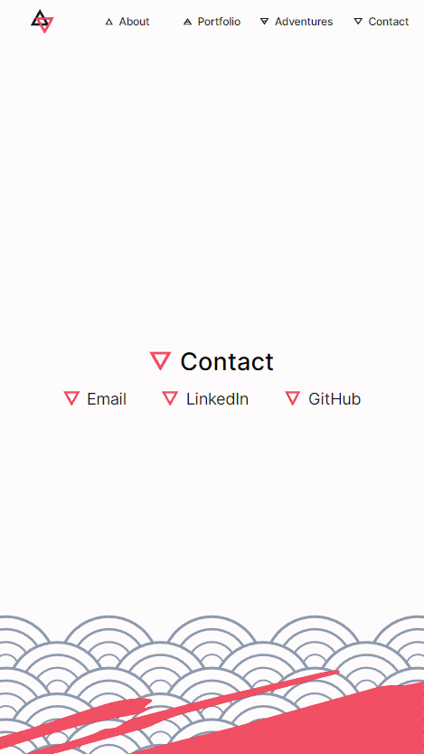

Portfolio Website
Tools: Figma, HTML, CSS, JavaScript
Skills: Programming, Web Design
Overview
I created my first version of this website at the end of 2019, which only included the logo design and dynamic header. Then at the end of 2020 I dove right into HTML and CSS—without bothering to learn them first—and created the first public version of this site. It was very “baby's first website” and had lots of room to grow.
Finally, in 2022 I completely redesigned this site into the version that you see now. I made a functional prototype, learned more CSS tricks (and just as many suspect workarounds), and slapped everything together with some shiny new branding.
A Redesign in Red
The first version of my website had a few design issues that didn't contribute to a good website-viewing experience, the largest of which was the inverted colour scheme with a dark background and light text. As well, the theme incorporated a different accent colour for each section and didn't have consistent theming across pages.
However, I didn't want to just start from scratch. I really wanted to keep the same logos in the redesign, which meant I had to figure out a way to balance the working aspects of the old site with the ideas I had for the new one.
Goal: integrate the existing site logos into a more cohesive visual identity
I started out by taking my old functional prototype and fiddling around with the elements in Figma. After lots of trial and error I eventually settled on a new colour palette: a single accent colour—red—as well as neutral tones for light, medium, and dark shades. I also added other design elements to the site's identity like the “paint” splashes and repeated circular patterns seen in the background of the site.
Finally, I chose a different font family and set clearer boundaries for the content I wanted on my site: “projects” became “portfolio” and is for anything design-related, while “portfolio” became “adventures” and is for any creative projects not directly related to design or research.
I ended up prototyping the home page and a couple of subpages in Figma, which you can view here.
Home Page
The concept of the home page remained the same between iterations. It's a single page with five sections, one for each area listed in the header. The most important feature for me to keep from the old design was the dynamic logo in the header, which changes based on the section of the page currently being viewed.
If you checked out the functional prototype you might have noticed that the “info cards” for different pages look a bit different. When I design in Figma I have the bad habit of working very zoomed out. This meant that the cards looked good in theory, but in practice one card took up almost the entire screen and made it a pain to scroll through.
As I coded the actual site I had to go back and make things smaller three or four times. It was a huge pain, but an important lesson in making sure I have it right the first time so I don't need to go back and fix it.
Another hurdle was that I designed for desktop first, which meant I ended up using the “graceful degradation” design pattern to adapt the site to smaller screens rather than designing for mobile first and using “progressive enhancement” to scale up to desktop. This means that some parts of the site still look a bit off when viewed at different screen sizes.
 


Subpages
The biggest changes in this iteration were for the subpages. Now armed with the knowledge of flexboxes, I made sure that each part of a subpage was reusable with different text and images while still staying in perfect alignment. I also added a banner at the top, narrowed the content area, and split my writeups into smaller sections with headers to improve the reading experiences.
I also implemented the ability to click on an image to view it in full screen. Adding this feature allowed me to not worry about the size of images being viewable and instead let me organize media in neater rows. However, giving images of different sizes and aspect ratio the same height in a row was a massive headache. I managed to solve it without using JavaScript, but it's about as clean a solution as stapling up a leaky pipe.

Trial By Fire(s)
The most satisfying part of rebuilding the site is finally squashing some bugs that I couldn't figure out before. Header changes lagging behind? Probably shouldn't be using “transition: all”. Hover states sticking on mobile devices? Make sure they're only enabled on devices that use a pointer! Using JavaScript to control the size of elements in the document because you didn't understand flexbox and threw code at it until it worked? Yeah. Things are looking much better now.
Final Product
You are here! If you're seeing this website then hey, I finally got it back out into the world with a fresh coat of paint.
Next Steps
This isn't a perfect website, but it perfectly fits my goal of updating my portfolio to something better functioning, better designed, and better at representing who I am as a designer. I'll continue using this site until the paint flakes off and it's time for me to tune it up into version three.